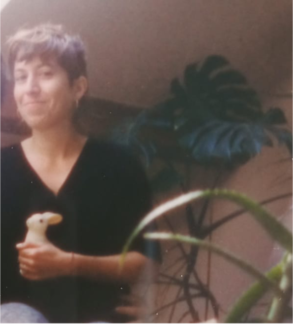

Bio
I am an artist based in Brussels. I initially studied Political Science at the University of Turin, where I obtained a Bachelor’s degree in International Studies, before pursuing artistic studies at ERG in Brussels, with a Bachelor’s degree in Drawing followed by a Master’s degree in Speculative Narration.
I later expanded this interdisciplinary trajectory through studies in web development and a Master’s degree in Information and Communication Science and Technology at the Université libre de Bruxelles. Across these different fields, I have developed a particular interest in the relationships between bodies and machines, living systems and technologies, as well as in in the encounters between poetic and analytical forms of language.
Alongside this trajectory, I have developed a sustained engagement with body-based disciplines through training and practice in anatomy, movement, voice and somatic approaches.

Practice / Research
I work across drawing, film, sound, voice and participatory practices. My work explores forms of attention to bodies, gestures and living environments, and the shifting relationships between human, technological and more-than-human worlds.
I am interested in how we observe, measure, classify and represent what surrounds us, and in what becomes visible — or escapes — through these processes. Moving between documentary and speculative approaches, my work often develops through forms of translation: from data to sound, from scientific or technical representations to drawing, from documents to voices and narratives.
My practice questions the boundaries, taxonomies and hierarchies through which bodies and forms of life are defined and organised. From a feminist and posthumanist perspective, I am interested in challenging anthropocentric ways of seeing and in exploring forms of interdependence between humans, other living beings, technologies and environments.
Alongside individual works, I develop collective and participatory processes through workshops, sound, voice and bodily exploration. I approach art as a space for encounter and shared inquiry: a way of making relations, cultivating attention and empathy, and questioning the structures of power that shape how we perceive and inhabit the world.